Dein Kommandostand an der Boxenmauer.
PitIng liest die UDP-Telemetrie aus F1® 25 und F1® 26 und zeigt alles, was ein Renningenieur braucht: Fahrerkarten mit Schäden und Reifen, Live-Streams, Circle of Doom, Wetter, Strategie und Boxenstopp-Duelle – auf einem Bildschirm.
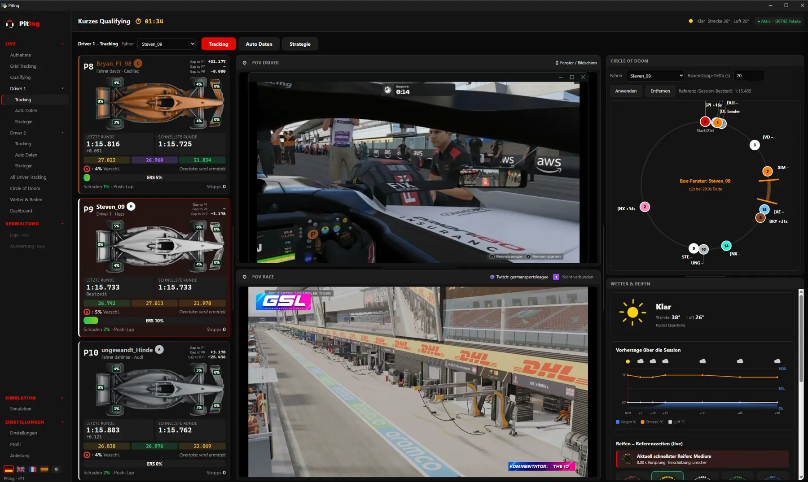
Jede Ansicht für einen Zweck.
Vom Fahrerplatz bis zur Boxenmauer: PitIng bündelt Live-Timing, Fahrzeugdaten, Strategie und Streams. Klick auf ein Bild für die Großansicht.
Dein Fahrer im Mittelpunkt
Bis zu sechs Fahrer gleichzeitig – jeder mit eigener Tracking-, Auto- und Strategie-Seite.
- Fahrerkarten: Fahrer davor, eigener Fahrer, Fahrer dahinter
- Zwei Bildschirme: POV des Fahrers und Race-Stream (Twitch/YouTube)
- Schäden je Bauteil, Reifentemperaturen, ERS, Sprit
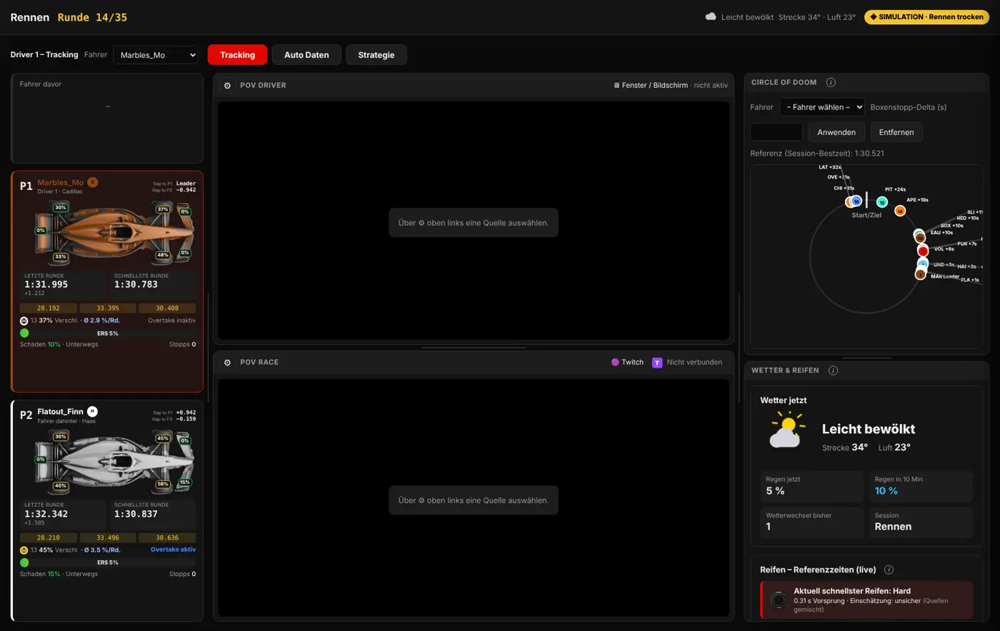
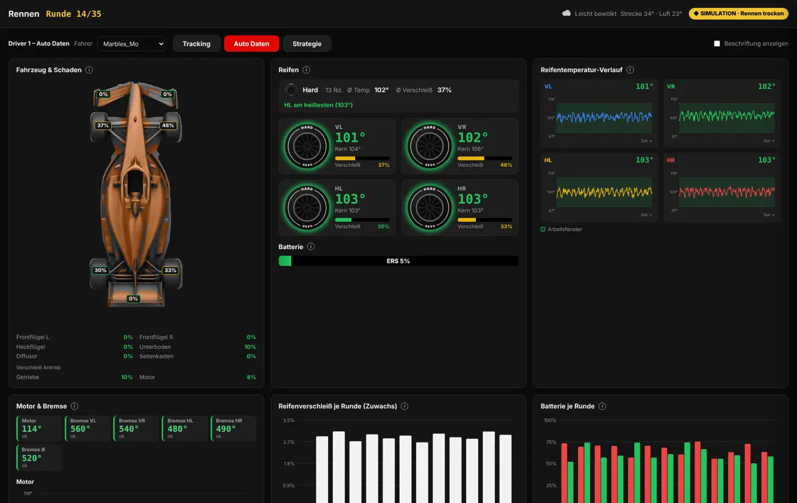
Wo kommst du nach dem Stopp raus?
Alle Autos auf einem Kreis nach Abstand. Mit eurem Boxenstopp-Delta zeigt PitIng das Fenster, in dem dein Fahrer nach dem Stopp wieder auf die Strecke kommt.
- Boxen-Fenster mit ±2 s Toleranz
- Referenz aus der Session-Bestzeit
- Gegner im Fenster sofort sichtbar
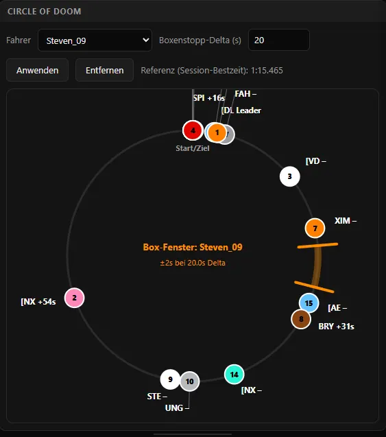
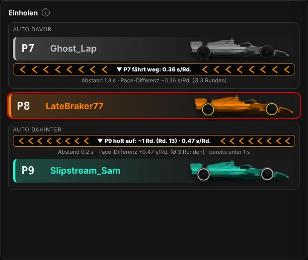
Das ganze Feld, vier Blickwinkel
Grid-Tabelle, Detail-Karten, Positionsverlauf und Trackmap mit Fahrer-Detail – umschaltbar mit einem Klick.
- Sektoren in Lila, Grün und Gelb wie im TV
- Einholen-Prognose für jeden Fahrer
- Trackmap mit Sektorgrenzen und Out-/In-Laps
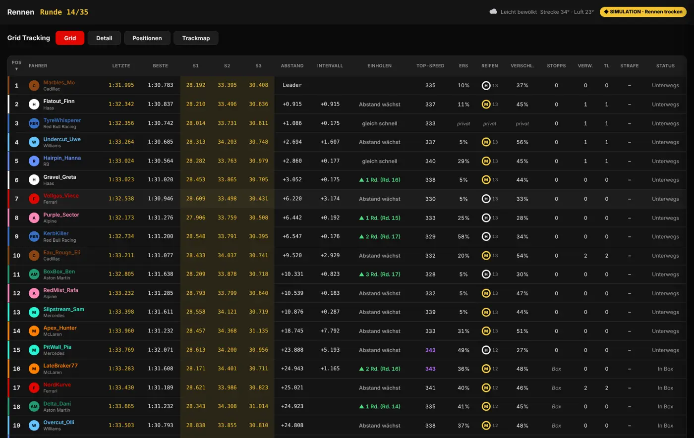
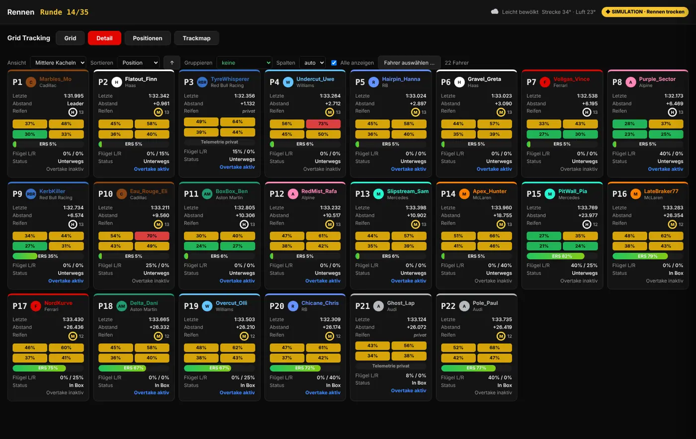
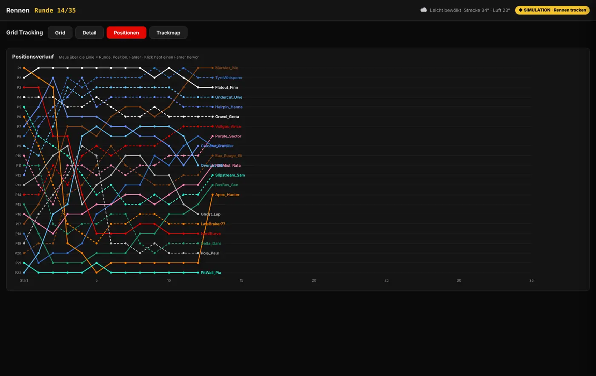
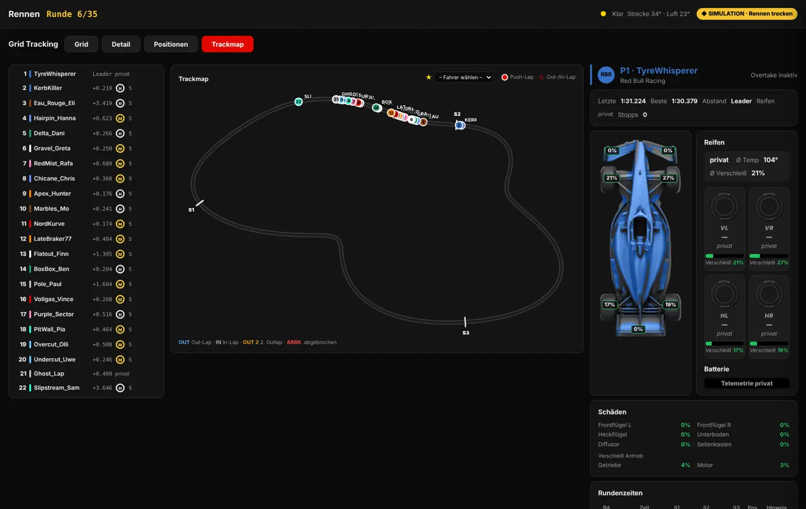
Wann boxen – und auf was?
Reifen- und Sprit-Hochrechnung bis ins Ziel, der beste Stopp je Mischung und Stopp-Duelle gegen die Autos vor und hinter dir.
- Verschleiß am schlechtesten Rad, Einbruch und Platzgefahr
- „Wann stoppen?“ für jede Runde und Mischung
- Undercut-Prognose im TV-Stil mit Rechenweg
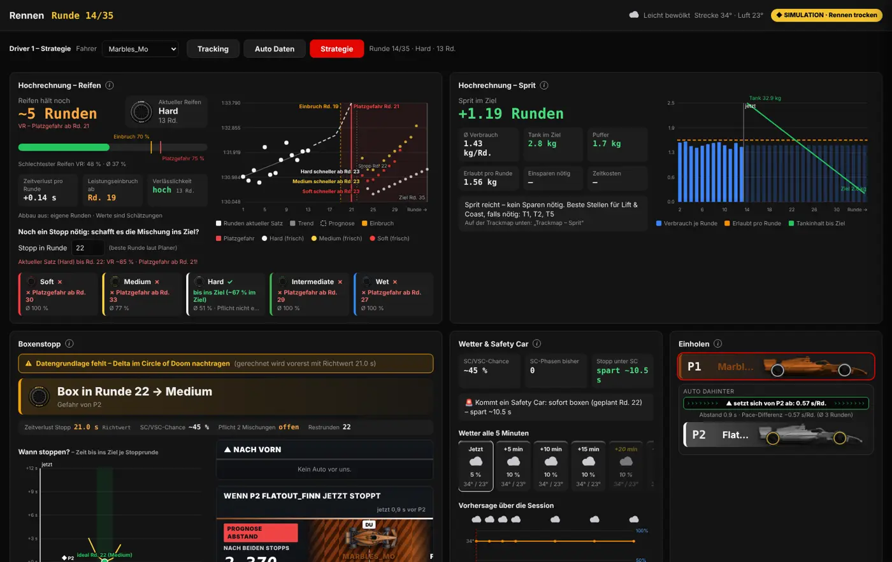
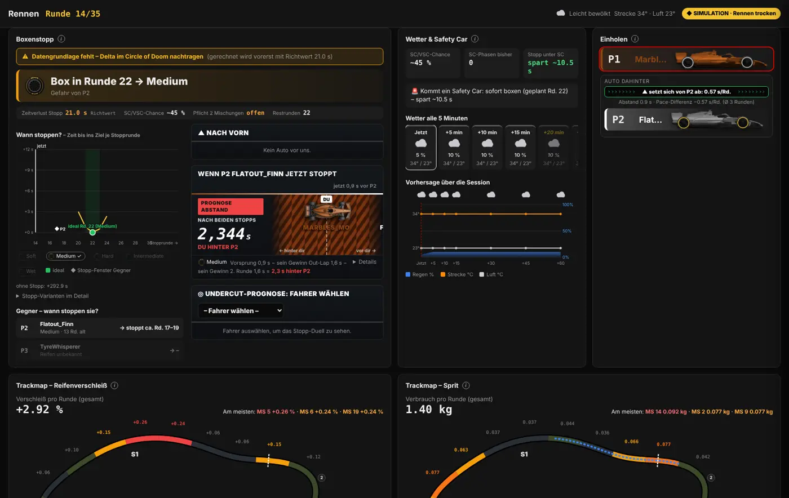
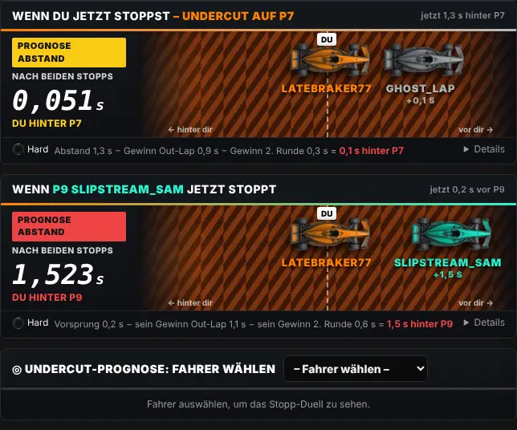
Regen kommt? Du weißt es vorher.
Die Vorhersage des Spiels in Runden umgerechnet, live Referenzzeiten aller Mischungen und der Crossover-Punkt zwischen Slicks und Intermediates.
- Temperatur- und Regenverlauf bis 60 Minuten voraus
- Streckenzustand je Mini-Sektor
- Reifenverteilung und Wechsel im Feld
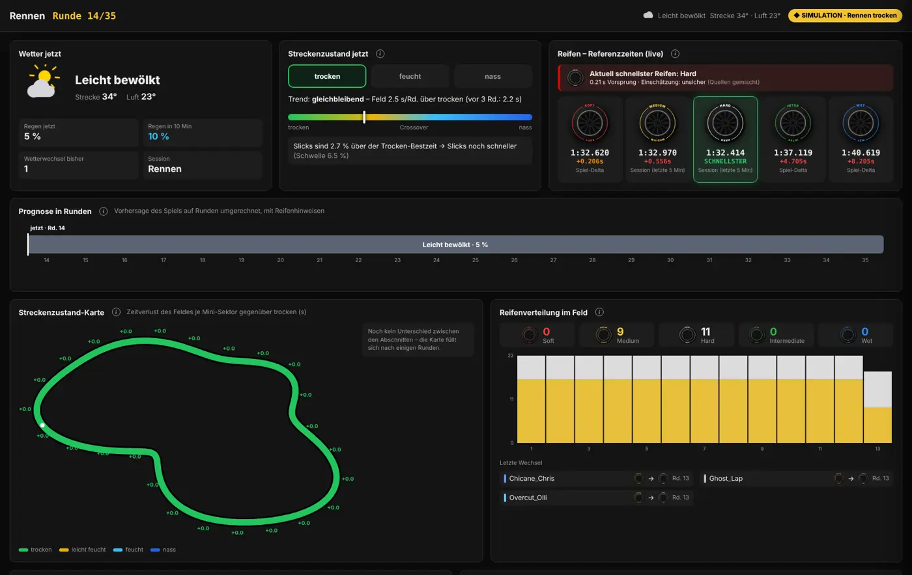
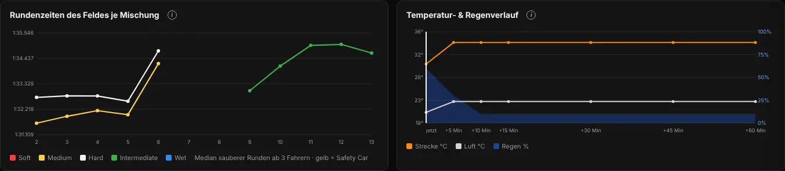
Jede Hundertstel sichtbar
Live-Tabelle mit Sektorfarben und eine Fahrer-Karte mit 25 Mini-Sektoren – inklusive Delta zur eigenen Bestzeit und zur Pole.
- Push-, Out- und In-Laps auf der Trackmap
- Mini-Sektoren in Echtzeit eingefärbt
- Laufende Runde mit Delta
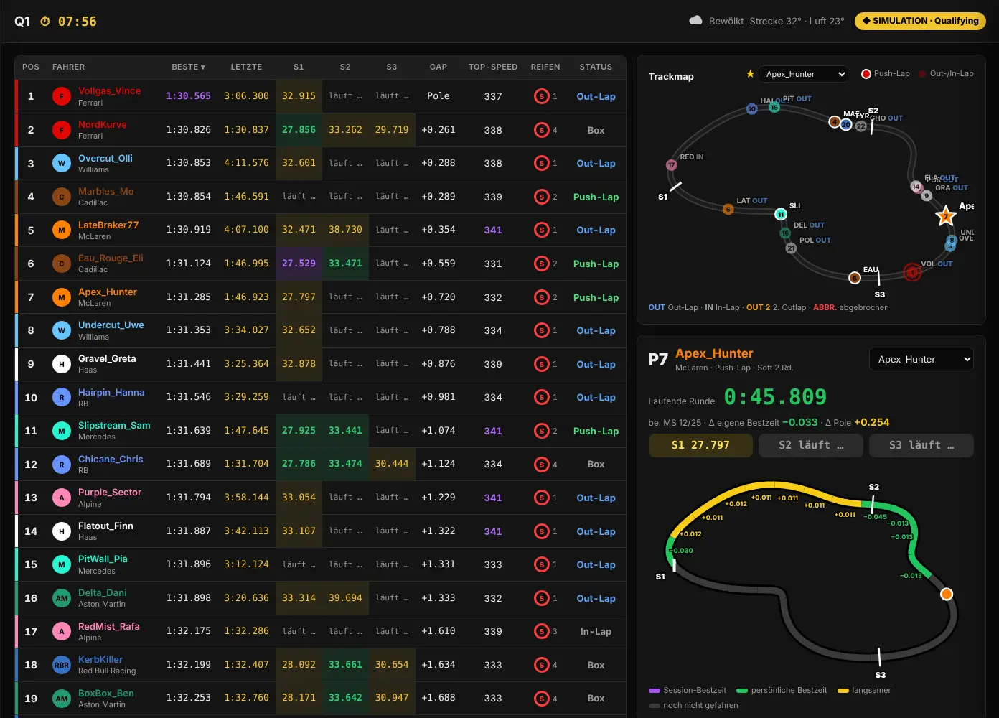
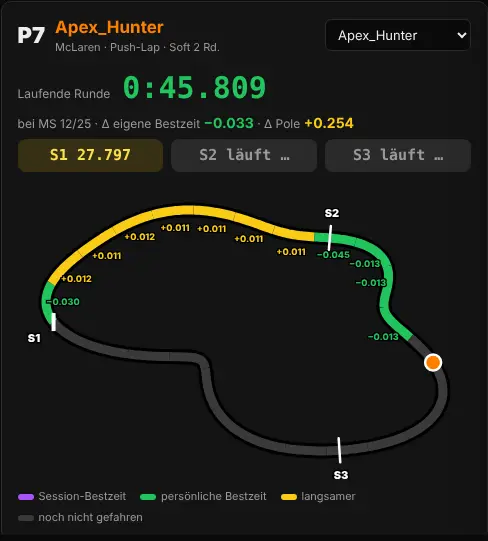
Alles an einem Ort
Setups je Strecke speichern und austauschen, ein frei belegbares Dashboard, Aufnahme in eine Datenbank für Auswertungen und eine Simulation zum Ausprobieren ohne Spiel.
- Setups für Trocken und Regen, Import und Export
- Jede Session gespeichert: Runden, Stints, Stopps, Wetter
- Fahrerprofile mit IP für schnellen Wechsel
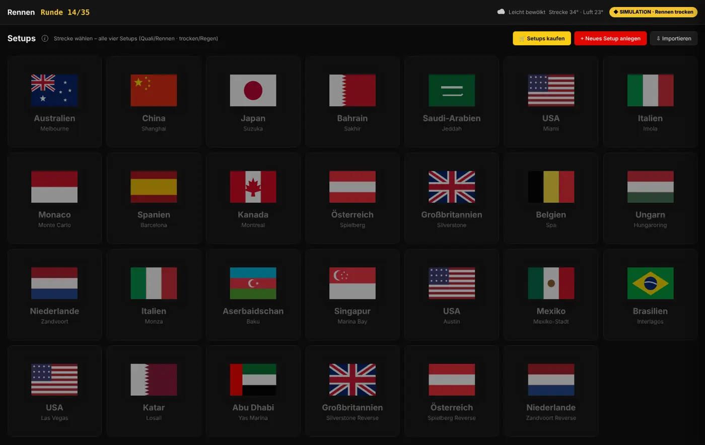
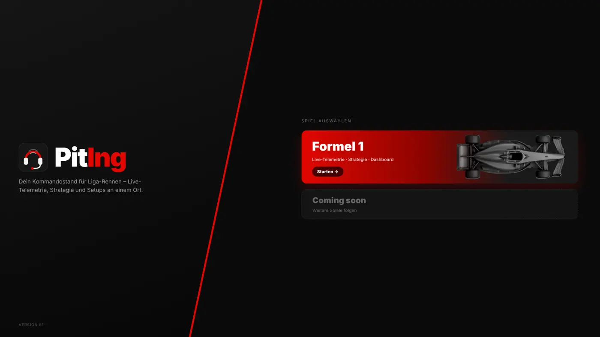
Alle Ansichten
In der Reihenfolge des Programms – läuft automatisch, mit ‹ › oder den Vorschaubildern selbst durchklicken.
In drei Schritten startklar
Demo laden & entpacken
ZIP herunterladen, entpacken und PitIng.exe starten – kostenlos mit der Simulation testen. Keine Installation, kein Python nötig. Für Live-Daten den Lizenzschlüssel unter Einstellungen → Lizenz eingeben – kein neuer Download.
Telemetrie im Spiel einschalten
Einstellungen → Telemetrie: UDP an, Port 20777, als IP die Adresse des PCs mit PitIng – zum Beispiel eure Radmin-VPN-IP.
Fahrer wählen & Aufnahme starten
Fahrerprofil mit IP aktivieren und „Aufnahme starten“ klicken – die Daten laufen live ein.
Voraussetzungen
- Windows 10 oder 11 (64-Bit)
- F1® 25 oder F1® 26 mit eingeschalteter UDP-Telemetrie
- Microsoft Edge WebView2 – bei Windows 11 dabei; fehlt es, startet PitIng automatisch im Browser
- Für Fahrer über das Internet: ein gemeinsames VPN wie Radmin
PitIng kaufen
Ein Kauf, dauerhaft nutzbar – kein Abo. Teste vorher die kostenlose Demo: Nach dem Kauf schaltest du sie mit deinem Lizenzschlüssel zur Vollversion frei – ohne neuen Download.
Den ganzen Ordner entpacken – PitIng.exe braucht den Ordner _internal daneben. Bei einer Warnung von Windows SmartScreen: „Weitere Informationen“ → „Trotzdem ausführen“.
- Alle Ansichten: Driver & Grid Tracking, Qualifying, Strategie, Circle of Doom, Wetter & Reifen, Setups
- Bis zu sechs Fahrer parallel
- Simulation zum Ausprobieren ohne Spiel
- Windows 10/11 · 64-Bit
Fragen? info.piting@gmail.com oder auf Discord.